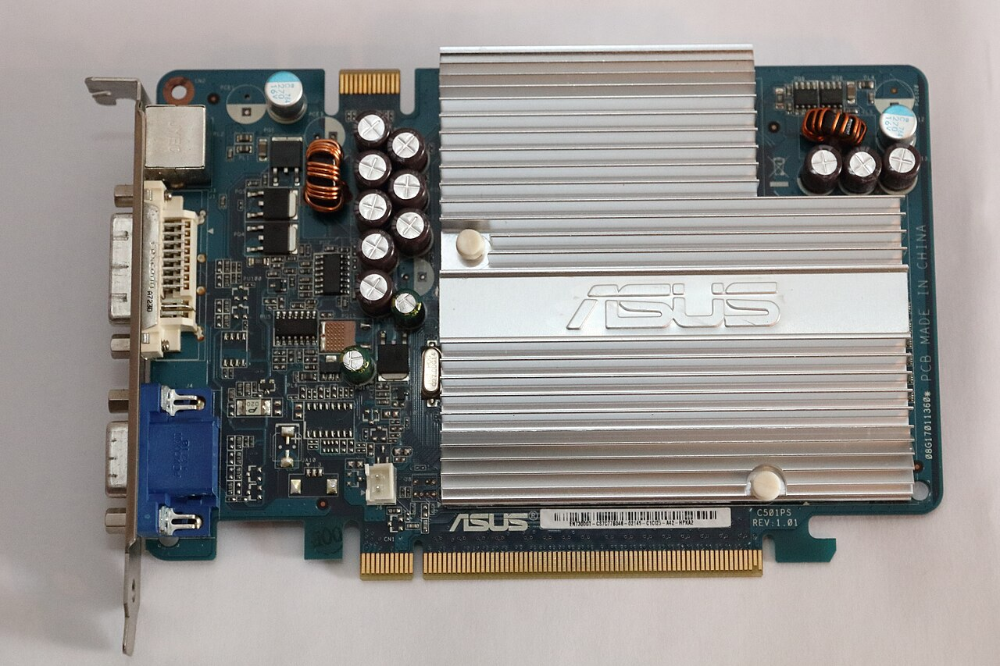

Learning from Data
History of AI from the 1990s to 2016
In the 1990s scientists changed their approach. Instead of following rules written by people, computers started to learn from examples, and this idea slowly changed everything.
1990s: Machine Learning
In the 1990s researchers moved from hand-written rules to machine learning, where programs find patterns in data by themselves. A spam filter, for example, does not need a list of bad words. It is trained on thousands of emails labeled "spam" or "not spam" and learns which features matter. This also changed what made a program good: with more and better examples, the same method could give much better results. By the end of the decade some American banks used a neural network developed by Yann LeCun to read handwritten numbers on cheques.
1997: Deep Blue
In May 1997 IBM's Deep Blue beat the world chess champion Garry Kasparov in New York, 3.5 to 2.5. The machine did not play like a human. It relied on special chips that evaluated about 200 million positions per second. It explored a huge number of possible moves and judged the positions with rules written together with chess experts. In this sense Deep Blue was closer to the old rule-based AI than to machine learning, because it did not learn anything from its games.
The year before, Kasparov had won the first match against Deep Blue 4 to 2. After losing the rematch he accused IBM of cheating and asked for a third match. IBM refused and dismantled the computer.

2000s: Data, GPUs and Deep Learning
Three things changed in the 2000s. The internet produced huge amounts of data. Graphics cards (GPUs) turned out to be very good at training neural networks. And new techniques made it possible to train networks with many layers, an approach called deep learning. Before, deep networks were very hard to train, because the error signal of backpropagation became weaker at every layer and the first layers almost stopped learning.
GPUs were designed for video games, where they draw 3D graphics by running thousands of small calculations in parallel. Training a neural network requires the same kind of calculations. In 2006 Hinton and his colleagues published a method to train deep networks one layer at a time, and the term "deep learning" spread from there.

2009: ImageNet
In 2009 Fei-Fei Li and her team at Princeton presented ImageNet, a large database of labeled images. At that time most researchers focused on improving algorithms, while Li believed that the lack of data was the real limit. The labeling was done through Amazon Mechanical Turk, a website where people are paid for small online tasks. ImageNet grew to more than 14 million images in about 20,000 categories, such as "dog", "strawberry" or "car". From 2010 a yearly competition compared the programs that recognized them best. A dataset this big was necessary, because deep networks have millions of weights, and with only a few examples they just memorize them instead of learning general patterns.
2012: AlexNet
In 2012 a deep network called AlexNet won the ImageNet competition with an error rate of about 15%, against about 26% for the second best entry. It was built by Alex Krizhevsky, Ilya Sutskever and Geoffrey Hinton at the University of Toronto and trained on two gaming graphics cards. AlexNet was a convolutional neural network, a type of network that looks at small parts of an image at a time: the first layers detect edges and colors, and the deeper ones combine them into shapes like eyes, wheels or letters. The rules for recognizing objects were not written by anyone, the network found them in the data. In the following years Google, Facebook and other tech companies hired deep learning researchers and bought their startups.
2016: AlphaGo
In March 2016 AlphaGo, developed by Google DeepMind, beat Lee Sedol, one of the strongest Go players in the world, 4 games to 1 in Seoul. Go has far more possible positions than chess, and many experts expected this result to take at least another decade. Because of this, the brute force approach of Deep Blue could not work. AlphaGo used two neural networks, one to suggest good moves and one to estimate who was winning. It first learned from about 30 million moves of human games, and then improved by playing millions of games against itself.
In the second game AlphaGo played "move 37", a move so unusual that commentators first thought it was a mistake. Lee Sedol won the fourth game. In 2019 he retired from professional Go, saying that AI is "an entity that cannot be defeated".